| Descriptive statistics | |||||
| Variable | Observations | Mean | Variance | Min | Max |
|---|---|---|---|---|---|
| tri | 129 | 8.404767e+03 | 5.173292e+06 | 4.805700e+03 | 1.365807e+04 |
| amihud_illiqudity | 129 | 1.143788e-04 | 7.228797e-09 | 6.815073e-08 | 4.131326e-04 |
| turn_over_ratio | 129 | 3.429762e-04 | 6.681290e-09 | 1.728531e-04 | 6.371190e-04 |
| bid_ask_spread | 129 | 3.653350e-02 | 8.017560e-04 | 1.323962e-02 | 2.800664e-01 |
| pe | 129 | 1.741102e+01 | 1.324346e+01 | 9.773000e+00 | 2.424900e+01 |
| beta_monthly_leveraged | 129 | 9.829977e-01 | 1.078852e-07 | 9.816000e-01 | 9.837000e-01 |
| dy | 129 | 3.241860e+00 | 2.752090e-01 | 2.420000e+00 | 4.800000e+00 |
| annualised_volatility_open | 129 | 1.659018e+01 | 2.315657e+01 | 1.002220e+01 | 2.992440e+01 |
| market_cap | 129 | 1.298655e+13 | 1.231063e+25 | 7.569386e+12 | 2.127136e+13 |
ARDL model
1 Summary Statistics
The summary statistics of the financial series that have been incorporated as a dependent and independent variable are shown in Table 1. The study examined the impact of liquidity, market cap, dividend yield, and beta weekly leverage on tri using monthly data from January 2013 to September 2023. The gathered from Yahoo Finance, freely available data source. A few common statistics of the data used in the studies are reported in Table 1. A total of 129 observations were included in that data analysis process. The tri average isequal to 8404, with minimum values of 4805 and maximum values of 13658. pe, beta monthly, and dy variables are in ratios. As some variables are in ratios while others in numbers, so comparing means and other measures across variables will not make much idea.
2 Correlation
To observe association among vaerious variables , correlation (a measure of linear association) is given as follows:
| Correlation among selected variables | |||||||||
| Var | tri | amihud_illiqudity | turn_over_ratio | bid_ask_spread | pe | beta_monthly_leveraged | dy | annualised_volatility_open | market_cap |
|---|---|---|---|---|---|---|---|---|---|
| tri | 1.00 | −0.15 | −0.65 | 0.07 | −0.56 | 0.15 | 0.60 | 0.39 | 0.99 |
| amihud_illiqudity | −0.15 | 1.00 | −0.02 | 0.16 | −0.09 | 0.20 | 0.02 | 0.00 | −0.13 |
| turn_over_ratio | −0.65 | −0.02 | 1.00 | 0.20 | 0.42 | −0.18 | −0.36 | −0.28 | −0.66 |
| bid_ask_spread | 0.07 | 0.16 | 0.20 | 1.00 | −0.09 | 0.04 | 0.23 | 0.02 | 0.09 |
| pe | −0.56 | −0.09 | 0.42 | −0.09 | 1.00 | −0.26 | −0.75 | 0.06 | −0.57 |
| beta_monthly_leveraged | 0.15 | 0.20 | −0.18 | 0.04 | −0.26 | 1.00 | 0.17 | 0.12 | 0.16 |
| dy | 0.60 | 0.02 | −0.36 | 0.23 | −0.75 | 0.17 | 1.00 | 0.35 | 0.65 |
| annualised_volatility_open | 0.39 | 0.00 | −0.28 | 0.02 | 0.06 | 0.12 | 0.35 | 1.00 | 0.46 |
| market_cap | 0.99 | −0.13 | −0.66 | 0.09 | −0.57 | 0.16 | 0.65 | 0.46 | 1.00 |
Correlation of tri with market capitalization is almost perfect while with liqudity , its zero, while its negative with pe. But as correlation is not same as the causation, therefore, one should observe caution while interpreting results. THese results indicate
3 Trend analysis
First step is analysis is always to plot your data for better insight.
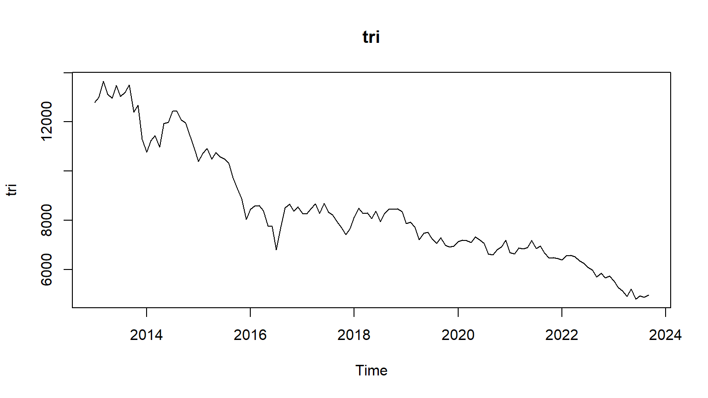
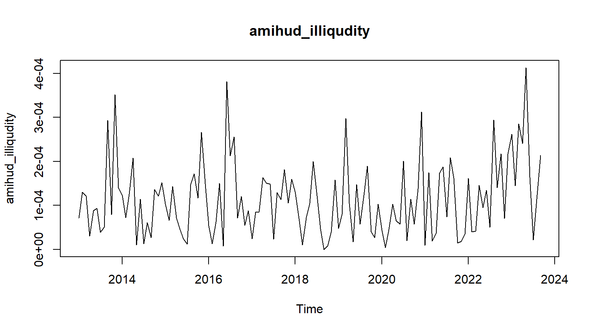
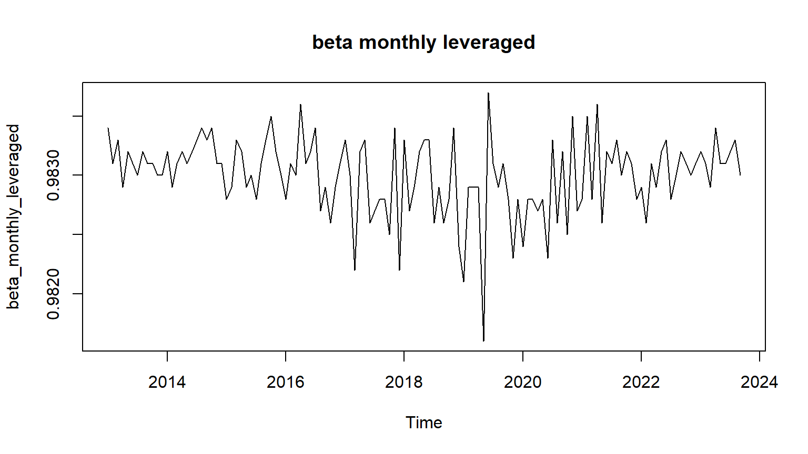
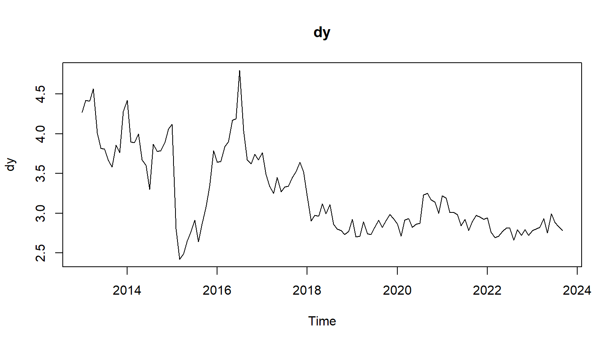
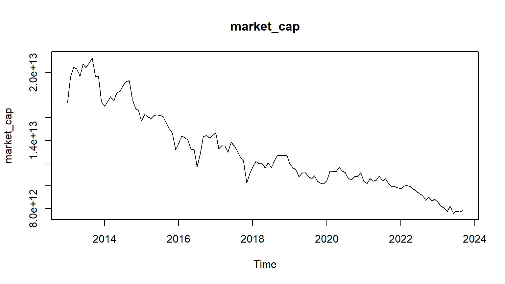
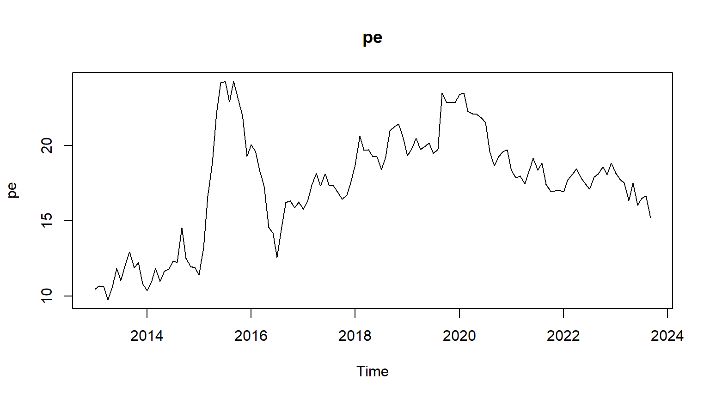
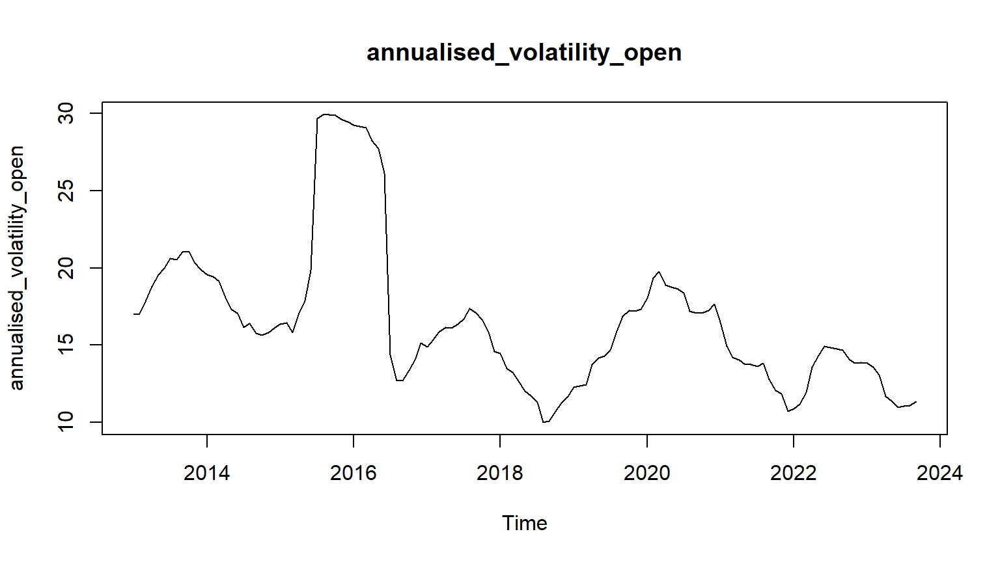
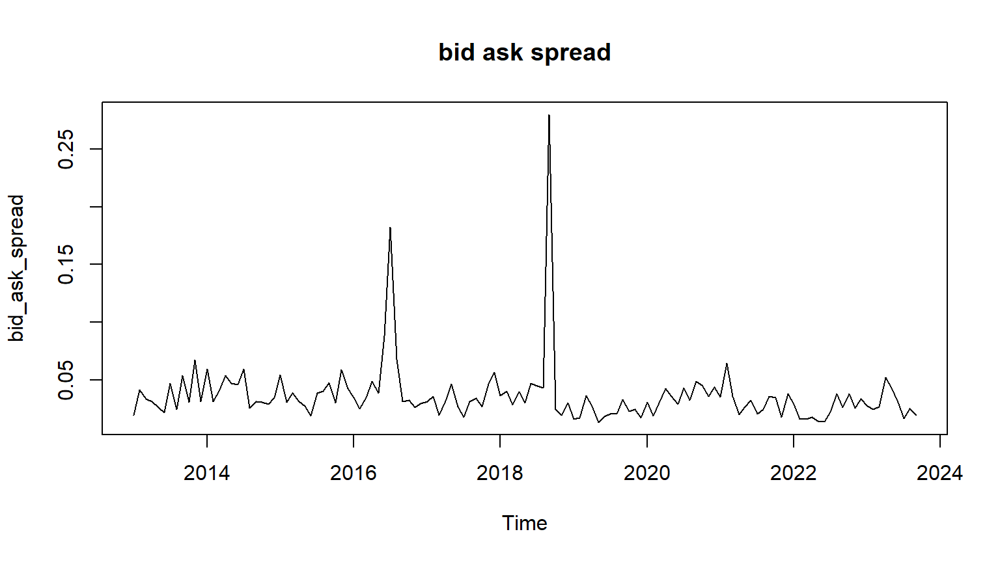
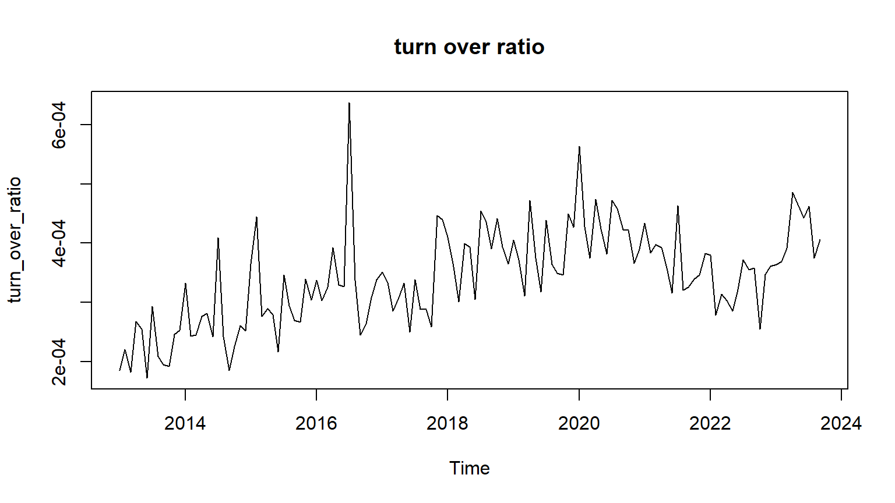
From these plots, one observes that some series are showing non-stationary behavior and we will test using adf test in the following part.
4 Taking log of tri, market cap and turn over ratio
These three variables have very large values, therefore, log transformation will be made in order to scale down values and to some extent it will make data normally distributed.
5 Unit Root Testing using ADF and PP tests
ADF test indicates that all variables with log transformation are non-stationary besides pe which is as per expectation as ratio and rates variables are usually stationary. Philips-Perron test indicates `have also more or similar results. So one thing is obvious all variables are of the same order of integration, therefore, we shall use ARDL model accordingly. Before we go with seasonal plots to have an idea of seasonality in couple of series.
6 Seasonality
But before we proceed further, lets have an overview of seasonality and see whether there are strong seasonal patterns are or not.
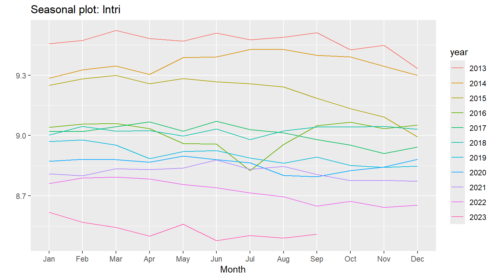
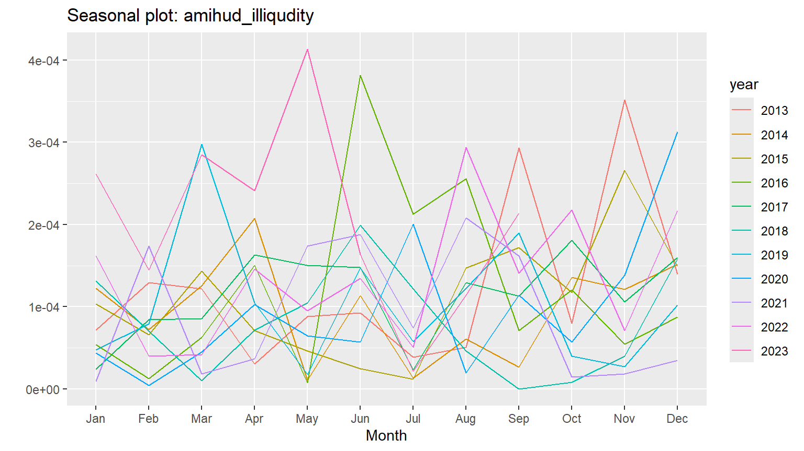
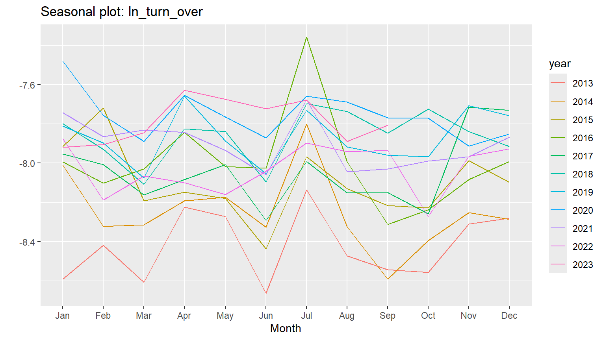
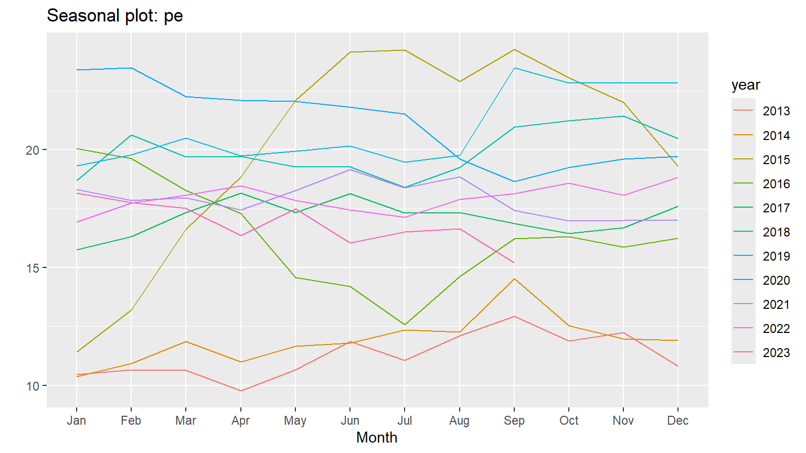
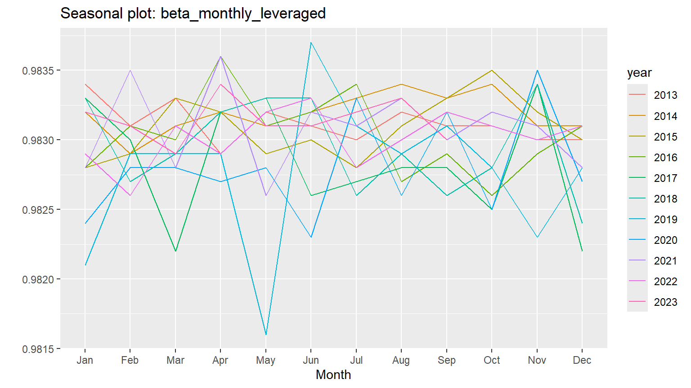
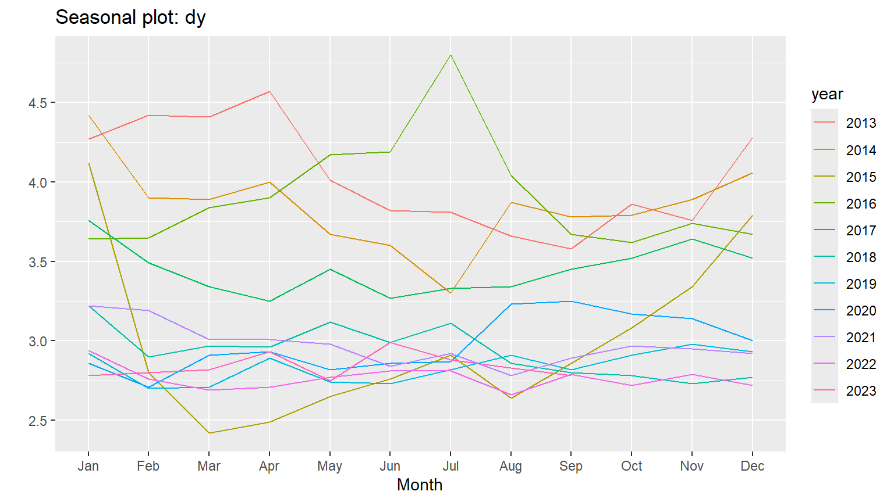
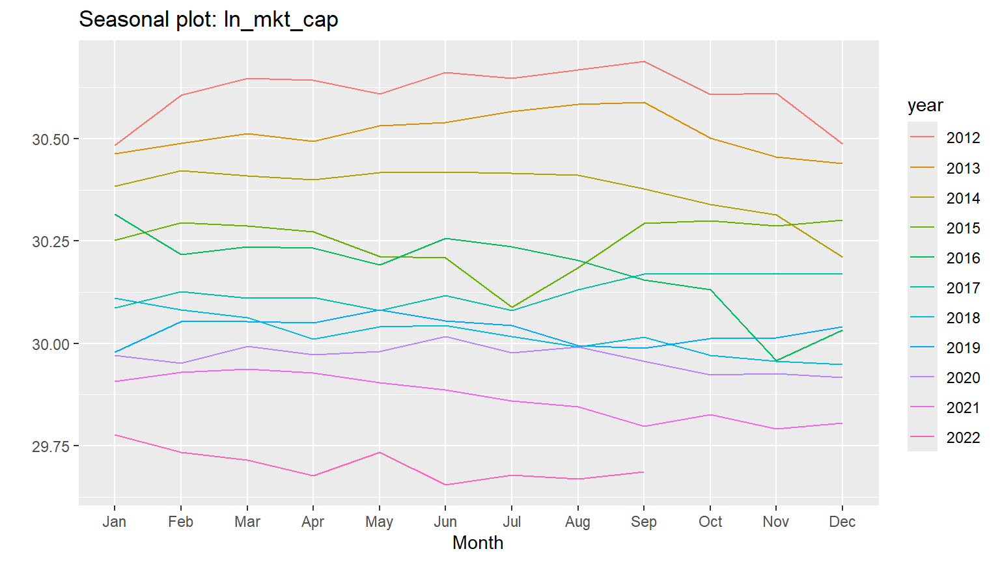
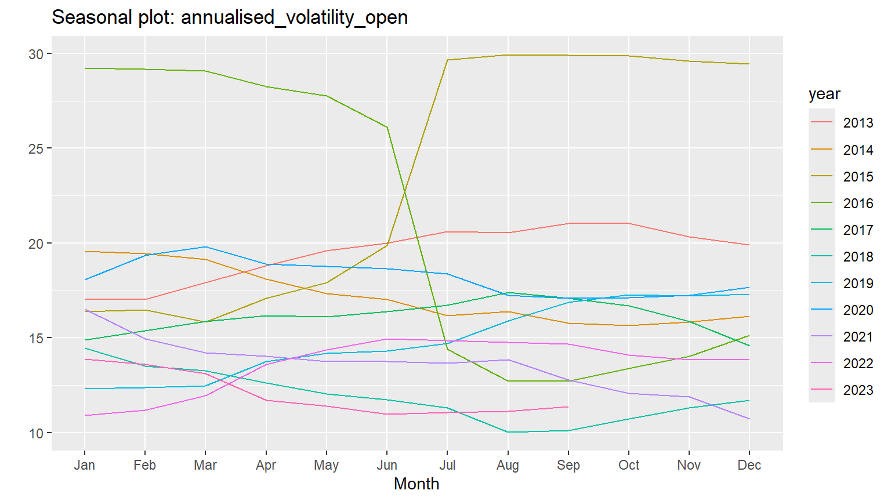
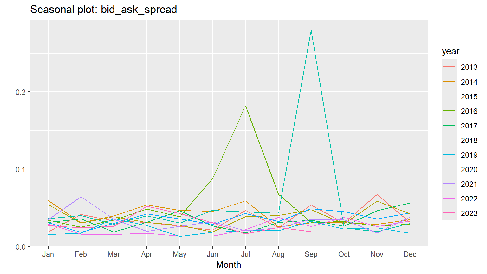
Seasonality element in most of the cases is not strong and its impact is not significant.
7 ARDL
First step in ARDL modeling will be to pick the right order of lags structures of each of the variables to be used in the model. It will also help us in deciding whether we have significant observations available for model estimation or not. Its monthly data and seasonality seems not very significant , therefore we have assumed maximum lag order of each of the variable is 4 and then select appropriate lag order as per AIC criteria.
8 Best model selection
$best_model
Time series regression with "ts" data:
Start = 4, End = 129
Call:
dynlm::dynlm(formula = full_formula, data = data, start = start,
end = end)
Coefficients:
(Intercept) L(lntri, 1)
-1.224e+00 7.021e-01
L(lntri, 2) L(lntri, 3)
3.778e-01 -1.888e-01
ln_turn_over L(ln_turn_over, 1)
-4.186e-03 -1.165e-02
ln_mkt_cap L(ln_mkt_cap, 1)
5.361e-01 -3.663e-01
L(ln_mkt_cap, 2) L(ln_mkt_cap, 3)
-1.664e-01 9.719e-02
pe L(pe, 1)
5.963e-03 -4.679e-03
L(pe, 2) L(pe, 3)
2.559e-03 -2.735e-03
dy L(dy, 1)
-4.145e-02 2.433e-02
L(dy, 2) L(dy, 3)
5.200e-02 -3.278e-02
beta_monthly_leveraged amihud_illiqudity
-9.889e-01 1.174e+01
L(amihud_illiqudity, 1) bid_ask_spread
-6.296e+01 -3.838e-02
annualised_volatility_open L(annualised_volatility_open, 1)
-1.086e-03 -2.350e-03
L(annualised_volatility_open, 2) L(annualised_volatility_open, 3)
3.859e-04 2.500e-03
$best_order
lntri ln_turn_over
3 1
ln_mkt_cap pe
3 3
dy beta_monthly_leveraged
3 0
amihud_illiqudity bid_ask_spread
1 0
annualised_volatility_open
3
$top_orders
lntri ln_turn_over ln_mkt_cap pe dy beta_monthly_leveraged amihud_illiqudity
1 3 1 3 3 3 0 1
2 2 0 2 1 2 0 1
3 3 1 3 2 3 0 1
4 3 1 2 3 3 0 1
5 2 0 2 1 2 0 1
6 3 1 3 3 3 0 2
7 2 0 2 0 2 0 1
8 3 2 3 3 3 0 1
9 2 0 2 1 2 0 2
10 2 0 2 1 2 0 1
11 2 0 2 1 1 0 1
12 1 0 1 1 1 0 1
13 3 1 3 3 3 0 1
14 3 2 3 3 3 0 1
15 2 0 2 1 2 0 2
16 2 0 2 1 2 1 1
17 2 1 2 1 2 1 1
18 1 0 1 1 1 0 1
19 2 0 1 1 2 0 1
20 3 2 3 3 3 0 1
bid_ask_spread annualised_volatility_open AIC
1 0 3 -675.3075
2 0 2 -675.1255
3 0 3 -674.9866
4 0 3 -674.3655
5 0 1 -674.2260
6 0 3 -673.8163
7 0 2 -673.6686
8 0 3 -673.3288
9 0 2 -673.2300
10 1 2 -673.1420
11 0 2 -672.1452
12 0 0 -671.8965
13 0 2 -671.6800
14 1 3 -671.3352
15 1 2 -671.2455
16 1 2 -671.1583
17 1 2 -671.0260
18 0 1 -671.0108
19 0 2 -670.0040
20 0 2 -669.9781\(lntri=ln_turn_over+ln_mkt_cap+pe+dy+beta_monthly_leveraged+amihud_illiqudity+bid_ask_spread+annualised_volatility_open\)
9 Select the best model using lag length AIC criteria
ardl(3,1,3,3,3,0,1,0,3) is found to be the best model using lag length selectio criteria based on AIC. And we shall use this best model to proceed further.
Coefficients of each variable and required lags is given in the table. ardl(3,1,3,3,3,0,1,0,3) is the best model. So this model has 17 coefficients to estimate from a sample of 129 observations which seems fine.
10 ARDL model estimation
Problem with applying OLS is that some variables are non-stationary and some are stationary, which will lead to spurious regression. Therefore, we shall first we estimate the UECM (Unrestricted Error Correction Model) of the underlying ardl(3,1,3,3,3,0,1,0,3)
Time series regression with "ts" data:
Start = 4, End = 129
Call:
dynlm::dynlm(formula = full_formula, data = data, start = start,
end = end)
Residuals:
Min 1Q Median 3Q Max
-0.038674 -0.007579 -0.000001 0.007464 0.056027
Coefficients:
Estimate Std. Error t value Pr(>|t|)
(Intercept) -1.224e+00 4.971e+00 -0.246 0.80602
L(lntri, 1) -1.089e-01 4.544e-02 -2.397 0.01840 *
L(ln_turn_over, 1) -1.584e-02 1.285e-02 -1.233 0.22060
L(ln_mkt_cap, 1) 1.006e-01 5.167e-02 1.947 0.05432 .
L(pe, 1) 1.109e-03 1.060e-03 1.046 0.29806
L(dy, 1) 2.096e-03 9.059e-03 0.231 0.81752
beta_monthly_leveraged -9.889e-01 4.887e+00 -0.202 0.84005
L(amihud_illiqudity, 1) -5.123e+01 2.717e+01 -1.885 0.06230 .
bid_ask_spread -3.838e-02 5.876e-02 -0.653 0.51512
L(annualised_volatility_open, 1) -5.501e-04 5.702e-04 -0.965 0.33696
d(L(lntri, 1)) -1.890e-01 9.835e-02 -1.921 0.05754 .
d(L(lntri, 2)) 1.888e-01 9.224e-02 2.047 0.04325 *
d(ln_turn_over) -4.186e-03 9.845e-03 -0.425 0.67162
d(ln_mkt_cap) 5.361e-01 5.197e-02 10.317 < 2e-16 ***
d(L(ln_mkt_cap, 1)) 6.917e-02 7.648e-02 0.904 0.36793
d(L(ln_mkt_cap, 2)) -9.719e-02 6.324e-02 -1.537 0.12745
d(pe) 5.963e-03 1.948e-03 3.061 0.00284 **
d(L(pe, 1)) 1.760e-04 2.066e-03 0.085 0.93226
d(L(pe, 2)) 2.735e-03 2.006e-03 1.363 0.17580
d(dy) -4.145e-02 9.939e-03 -4.171 6.47e-05 ***
d(L(dy, 1)) -1.922e-02 1.114e-02 -1.725 0.08761 .
d(L(dy, 2)) 3.278e-02 1.091e-02 3.006 0.00335 **
d(amihud_illiqudity) 1.174e+01 1.872e+01 0.627 0.53202
d(annualised_volatility_open) -1.086e-03 1.286e-03 -0.844 0.40068
d(L(annualised_volatility_open, 1)) -2.886e-03 1.199e-03 -2.407 0.01792 *
d(L(annualised_volatility_open, 2)) -2.500e-03 1.170e-03 -2.137 0.03502 *
---
Signif. codes: 0 '***' 0.001 '**' 0.01 '*' 0.05 '.' 0.1 ' ' 1
Residual standard error: 0.01503 on 100 degrees of freedom
Multiple R-squared: 0.889, Adjusted R-squared: 0.8612
F-statistic: 32.03 on 25 and 100 DF, p-value: < 2.2e-16F-statisitic indicate that variables in the model are collectively important for forecasting stock market turn over.
11 RECM (Restricted Error Correction Model)
Underlying ardl(3,1,3,3,3,0,1,0,3), allowing the constant to join the long-run relationship (case
Time series regression with "zooreg" data:
Start = 4, End = 129
Call:
dynlm::dynlm(formula = full_formula, data = data, start = start,
end = end)
Residuals:
Min 1Q Median 3Q Max
-0.038674 -0.007579 -0.000001 0.007464 0.056027
Coefficients:
Estimate Std. Error t value Pr(>|t|)
d(L(lntri, 1)) -0.188957 0.083114 -2.273 0.024958 *
d(L(lntri, 2)) 0.188833 0.079091 2.388 0.018683 *
d(ln_turn_over) -0.004186 0.006892 -0.607 0.544902
d(ln_mkt_cap) 0.536131 0.044985 11.918 < 2e-16 ***
d(L(ln_mkt_cap, 1)) 0.069169 0.065048 1.063 0.289968
d(L(ln_mkt_cap, 2)) -0.097195 0.057111 -1.702 0.091631 .
d(pe) 0.005963 0.001747 3.414 0.000901 ***
d(L(pe, 1)) 0.000176 0.001810 0.097 0.922733
d(L(pe, 2)) 0.002735 0.001834 1.491 0.138855
d(dy) -0.041452 0.007946 -5.216 8.76e-07 ***
d(L(dy, 1)) -0.019222 0.009218 -2.085 0.039393 *
d(L(dy, 2)) 0.032782 0.009332 3.513 0.000646 ***
d(amihud_illiqudity) 11.736418 13.464191 0.872 0.385301
d(annualised_volatility_open) -0.001086 0.001077 -1.007 0.315956
d(L(annualised_volatility_open, 1)) -0.002886 0.001010 -2.858 0.005107 **
d(L(annualised_volatility_open, 2)) -0.002500 0.001006 -2.485 0.014474 *
ect -0.108906 0.021828 -4.989 2.31e-06 ***
---
Signif. codes: 0 '***' 0.001 '**' 0.01 '*' 0.05 '.' 0.1 ' ' 1
Residual standard error: 0.0144 on 109 degrees of freedom
(0 observations deleted due to missingness)
Multiple R-squared: 0.8932, Adjusted R-squared: 0.8766
F-statistic: 53.64 on 17 and 109 DF, p-value: < 2.2e-1611.1 Test for cointegration
Let’s test if there is a long-run levels relationship (cointegration) using the bounds test from Pesaran et al. (2001). The bounds F-test (under the case 2) rejects the NULL hypothesis (let’s say, assuming alpha = 0.01) with p-value = 0.004418.
Bounds F-test (Wald) for no cointegration
data: d(lntri) ~ -1 + d(L(lntri, 1)) + d(L(lntri, 2)) + d(ln_turn_over) + d(ln_mkt_cap) + d(L(ln_mkt_cap, 1)) + d(L(ln_mkt_cap, 2)) + d(pe) + d(L(pe, 1)) + d(L(pe, 2)) + d(dy) + d(L(dy, 1)) + d(L(dy, 2)) + d(amihud_illiqudity) + d(annualised_volatility_open) + d(L(annualised_volatility_open, 1)) + d(L(annualised_volatility_open, 2)) + ect
F = 5.1686, p-value = 0.000567
alternative hypothesis: Possible cointegration
null values:
k T
8 1000
Bounds t-test for no cointegration
data: d(lntri) ~ L(lntri, 1) + L(ln_turn_over, 1) + L(ln_mkt_cap, 1) + L(pe, 1) + L(dy, 1) + beta_monthly_leveraged + L(amihud_illiqudity, 1) + bid_ask_spread + L(annualised_volatility_open, 1) + d(L(lntri, 1)) + d(L(lntri, 2)) + d(ln_turn_over) + d(ln_mkt_cap) + d(L(ln_mkt_cap, 1)) + d(L(ln_mkt_cap, 2)) + d(pe) + d(L(pe, 1)) + d(L(pe, 2)) + d(dy) + d(L(dy, 1)) + d(L(dy, 2)) + d(amihud_illiqudity) + d(annualised_volatility_open) + d(L(annualised_volatility_open, 1)) + d(L(annualised_volatility_open, 2))
t = -2.3966, Lower-bound I(0) = -3.4327, Upper-bound I(1) = -5.3469,
p-value = 0.7892
alternative hypothesis: Possible cointegration
null values:
k T
8 1000 So t=-2.3966 lies below lower limit and indicates there is no cointegration and p-value is also 0.7892 indicating no cointegration. Therefore, there is no long run relationship between stock market turn over and different variables included in the model. However, in the short run variables affect turn over.
12 Short-run
Here we have the short-run coefficients (with standard errors, t-statistics and p-values) as there is no cointegration from Bounds test for cointegration.
We can also estimate and visualize the delay multipliers along with their standard errors.
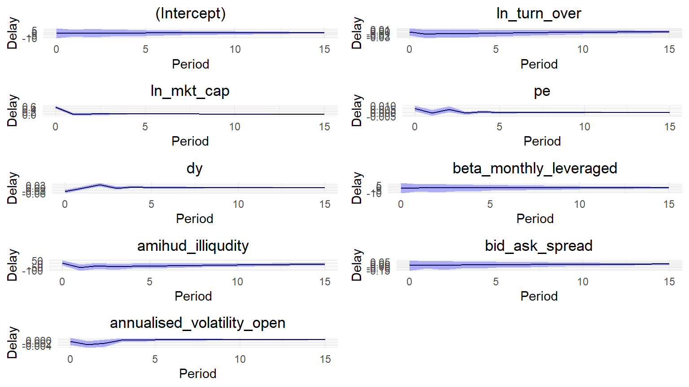
These graphs also indicate that some variables have short run impact before it settles down in 4 to 5 months. This analysis indicate that overall there is short run relationship among tri and other variables and play effective role.
These graphs indicate that most of the variables have almost same impact throughtout time while certain variables affect stock for 4 to 5 months before their impact becomes absorbed.